编辑 TypeScript
Visual Studio Code 拥有出色的 TypeScript 编辑支持。本文将深入介绍 VS Code 内置的编辑和编程语言特性。如果你想了解更多关于 VS Code 中常规编辑功能的信息，例如键盘快捷键、多光标、搜索和查找替换，可以阅读基础编辑。
IntelliSense
IntelliSense 向你提供智能代码补全、悬停信息和签名帮助，让你能够更快、更准确地编写代码。
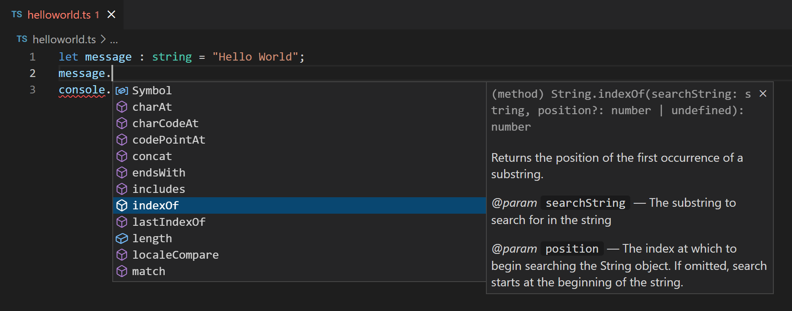
VS Code 为单独的 TypeScript 文件以及 TypeScript tsconfig.json 项目提供 IntelliSense。
悬停信息
将鼠标悬停在 TypeScript 符号上可以快速查看其类型信息和相关文档：
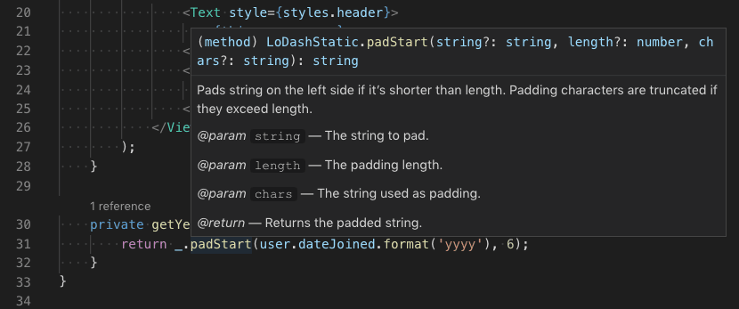
你也可以使用 kb(editor.action.showHover) 键盘快捷键在光标的当前位置显示悬停信息。
签名帮助
在编写 TypeScript 函数调用时，VS Code 会显示函数签名信息并高亮你当前正在补全的参数：
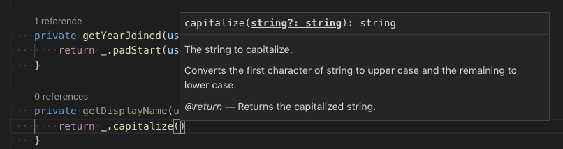
在函数调用中键入 ( 或 , 时，签名帮助会自动显示。使用 kb(editor.action.triggerParameterHints) 可以手动触发签名帮助。
代码片段
VS Code 包含基本的 TypeScript 代码片段，在你输入时会自动建议；
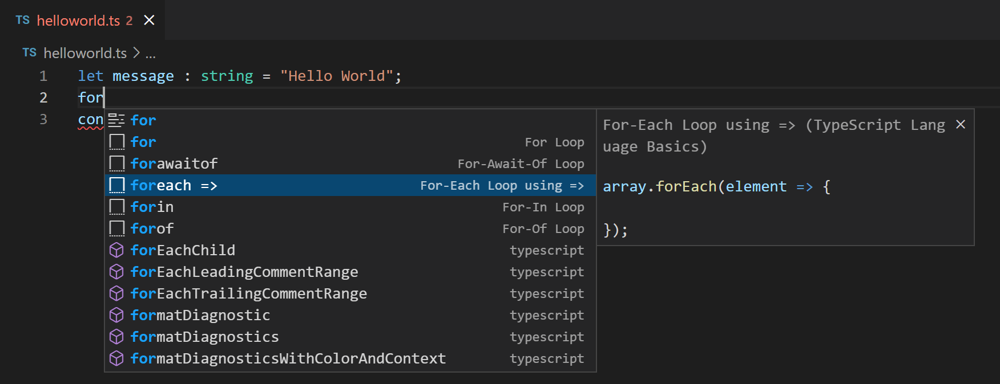
你可以安装扩展来获取更多代码片段，或者为 TypeScript 自定义代码片段。有关更多信息，请参阅用户自定义代码片段。
[!TIP]
你可以在设置文件中将editor.snippetSuggestions设置为"none"来禁用代码片段。如果你想查看代码片段，可以指定它们相对于建议的顺序：置顶（"top"）、置底（"bottom"）或按字母顺序内联排列（"inline"）。默认值为"inline"。
内联提示
内联提示会在源代码中添加额外的内嵌信息，帮助你理解代码的作用。
参数名称内联提示显示函数调用中的参数名称：

这可以帮助你一目了然地理解每个参数的含义，对于接受布尔值标志或参数容易混淆的函数特别有用。
要启用参数名称提示，请设置 js/ts.inlayHints.parameterNames.enabled。有三个可选值：
none— 禁用参数内联提示。literals— 仅为字面量（字符串、数字、布尔值）显示内联提示。all— 为所有参数显示内联提示。
变量类型内联提示显示没有显式类型注解的变量类型。
设置：js/ts.inlayHints.variableTypes.enabled
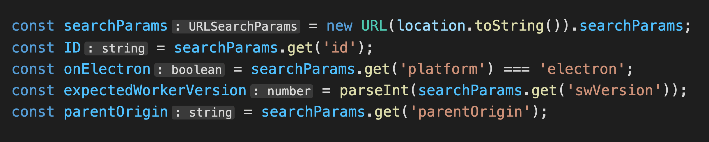
属性类型内联提示显示没有显式类型注解的类属性类型。
设置：js/ts.inlayHints.propertyDeclarationTypes.enabled

参数类型提示显示隐式类型参数的类型。
设置：js/ts.inlayHints.parameterTypes.enabled

返回类型内联提示显示没有显式类型注解的函数的返回类型。
设置：js/ts.inlayHints.functionLikeReturnTypes.enabled
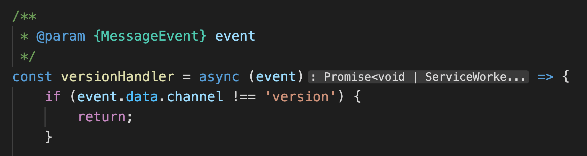
引用 CodeLens
TypeScript 引用 CodeLens 会为类、接口、方法、属性和导出对象显示行内引用计数：
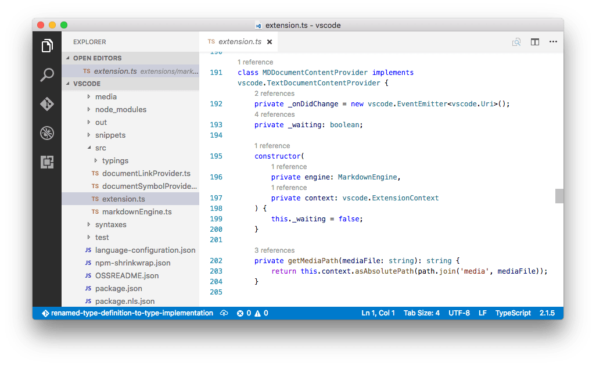
你可以在用户设置文件中设置 "js/ts.referencesCodeLens.enabled": true 来启用此功能。
点击引用计数可以快速浏览引用列表：
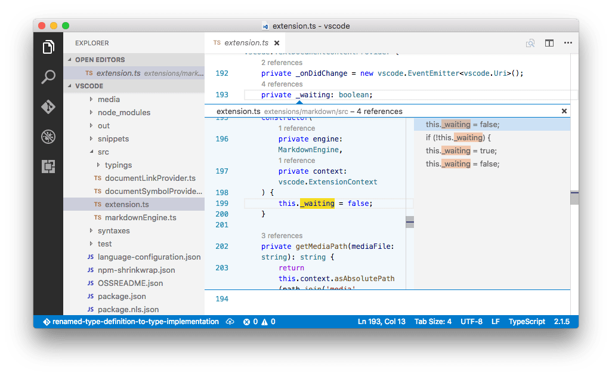
实现 CodeLens
TypeScript 实现 CodeLens 显示接口的实现者数量：
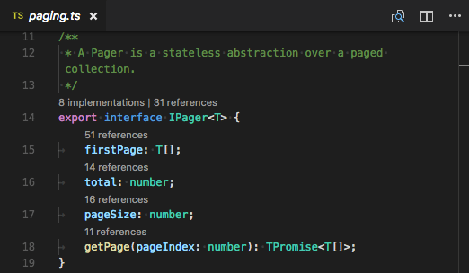
你可以通过设置 "js/ts.implementationsCodeLens.enabled": true 来启用此功能。
与引用 CodeLens 一样，你可以点击实现计数来快速浏览所有实现的列表。
自动导入
自动导入通过帮助你查找可用符号并自动为其添加导入语句来加快编码速度。
只需开始输入即可查看当前项目中所有可用的 TypeScript 符号的建议。
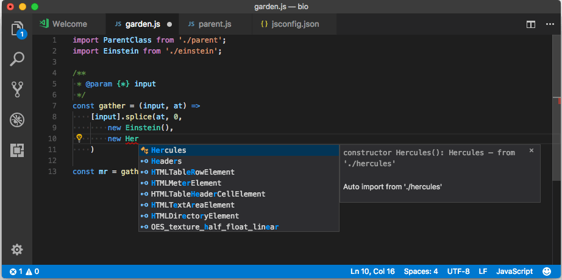
如果你从另一个文件或模块中选择了某个建议，VS Code 会自动为其添加导入语句。在此示例中，VS Code 在文件顶部添加了对 Hercules 的导入：
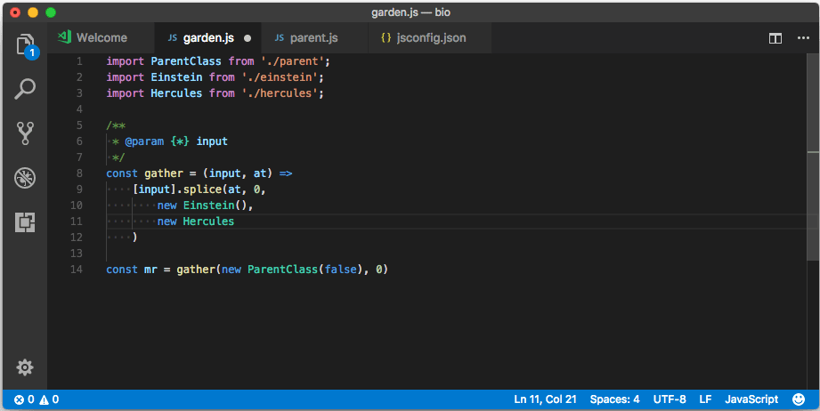
你可以通过设置 "js/ts.suggest.autoImports": false 来禁用自动导入。
粘贴时添加导入
当你在编辑器之间复制并粘贴代码时，VS Code 可以在粘贴代码时自动添加导入。当你粘贴包含未定义符号的代码时，会显示一个粘贴控件，让你选择以纯文本形式粘贴还是添加导入。
此功能默认启用，但你可以通过切换 setting(js/ts.updateImportsOnPaste.enabled) 设置来禁用它。
你可以通过配置 setting(editor.pasteAs.preferences) 设置，将带有导入的粘贴设为默认行为，而无需显示粘贴控件。包含 text.updateImports.jsts 或 text.updateImports 即可在粘贴时始终添加导入。
JSX 与自动闭合标签
VS Code 的 TypeScript 特性同样适用于 JSX。要在 TypeScript 中使用 JSX，请使用 .tsx 文件扩展名而非普通的 .ts：
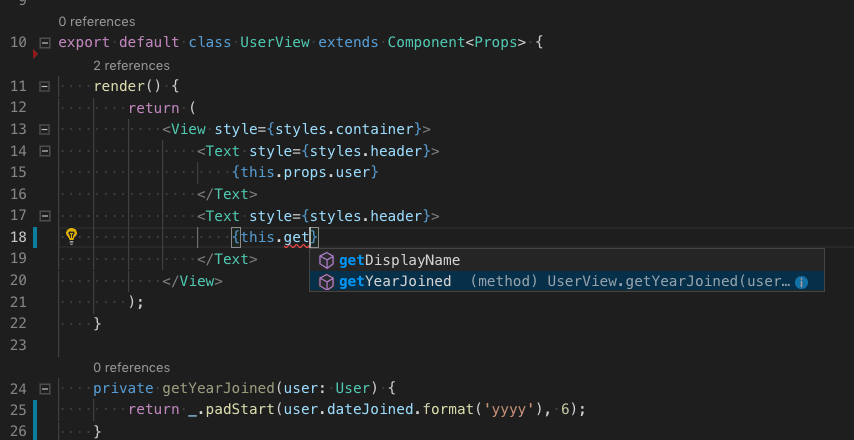
VS Code 还包含 JSX 特有的功能，例如 TypeScript 中的 JSX 标签自动闭合：
Sorry, your browser doesn't support HTML 5 video.
将 "js/ts.autoClosingTags.enabled" 设置为 false 以禁用 JSX 标签自动闭合。
JSDoc 支持
VS Code 的 TypeScript IntelliSense 支持多种标准 JSDoc 注解，并在建议、悬停信息和签名帮助中使用它们来显示类型信息和文档。
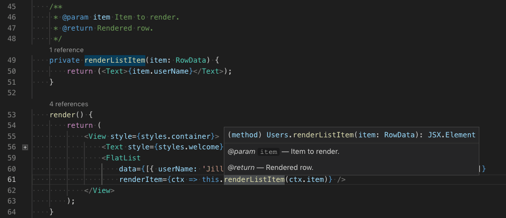
请记住，在 TypeScript 代码中使用 JSDoc 时，不应包含类型注解。TypeScript 编译器仅使用 TypeScript 类型注解，并会忽略 JSDoc 中的类型注解。
Sorry, your browser doesn't support HTML 5 video.
要禁用 TypeScript 中的 JSDoc 注释建议，请设置 "js/ts.suggest.completeJSDocs": false。
代码导航
代码导航让你能够快速浏览 TypeScript 项目。
- 转到定义
kb(editor.action.revealDefinition)- 转到符号定义的源代码。 - 速览定义
kb(editor.action.peekDefinition)- 弹出一个速览窗口，显示符号的定义。 - 转到引用
kb(editor.action.goToReferences)- 显示一个符号的所有引用。 - 转到类型定义 - 转到定义该符号的类型。对于类的实例，这将显示类本身，而不是实例的定义位置。
- 转到实现
kb(editor.action.goToImplementation)- 转到接口或抽象方法的实现。
你可以通过命令面板（kb(workbench.action.showCommands)）中的转到符号命令进行符号搜索导航。
- 转到文件中的符号
kb(workbench.action.gotoSymbol) - 转到工作区中的符号
kb(workbench.action.showAllSymbols)格式化
VS Code 包含一个 TypeScript 格式化程序，提供具有合理默认值的基础代码格式化功能。
使用 js/ts.format.* 设置来配置内置格式化程序，例如让花括号独占一行。或者，如果内置格式化程序妨碍了你的工作，可以将 "js/ts.format.enable" 设置为 false 来禁用它。
如需更专业的代码格式化风格，可以尝试从 VS Code 市场安装格式化扩展。
语法高亮与语义高亮
除了语法高亮之外，TypeScript 和 JavaScript 还提供语义高亮。
语法高亮根据词法规则为文本着色。语义高亮则基于语言服务解析出的符号信息丰富了语法着色。
语义高亮是否可见取决于当前的颜色主题。每个主题都可以配置是否显示语义高亮以及如何为语义标记设置样式。
如果启用了语义高亮并且颜色主题定义了相应的样式规则，就可以看到不同的颜色和样式。
语义高亮可以根据以下因素改变颜色：
- 符号的解析类型：命名空间、变量、属性、变量、类、接口、类型参数。
- 变量/属性是否为只读（const）或可修改。
- 变量/属性类型是否为可调用（函数类型）。
下一步
继续阅读以了解更多：
- 重构 TypeScript - 了解 TypeScript 可用的实用重构功能。
- 调试 TypeScript - 为你的 TypeScript 项目配置调试器。